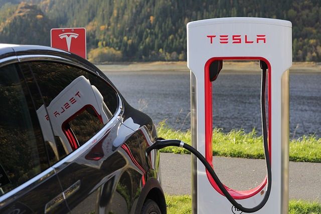
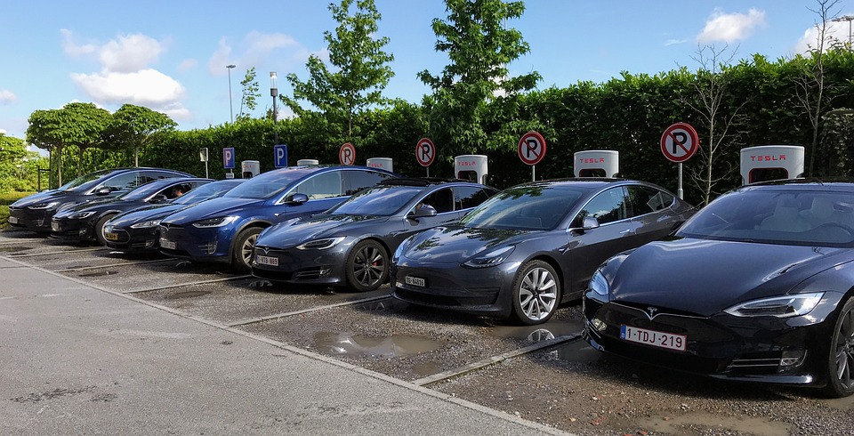

Norges adopsjon av elektriske kjøretøy
I 2022 var hele 79% av nye biler solgt i Norge helelektriske, mye av dette er grunnet Norge sin progressive politikk knyttet til elbileierskap. Som følge av dette har gjennomsnittlig CO2-utslipp fra nye personbiler hatt en markant nedgang i perioden 2000-2023, tall fra OFV viser at utslippene fra nye biler har blitt redusert fra 186 g/km i 2000 til 10 g/km i 2023.
Endring i 2022
Dette stolpediagrammet viser endringen i ulike kjøretøykategorier i Norge i 2022.Datasettene gir innsikt i hvordan antallet kjøretøyer i ulike kategorier har utviklet seg i løpet av disse årene.
Det er derimot ikke tall som sier at dette kommer til å vedvare, det er flere faktorer som har gjort at salget av elbiler har stagnert noe i 2023 – det har kommet nye avgifter på kjøretøy med en prislapp over 500 000. Det har også blitt gjort vesentlige prisjusteringer i markedet som har medført at mange sitter igjen med større verditap på bilene sine. Etterspørselen etter hurtigladere har økt markant og flere kommuner har hatt utfordringer med å imøtekomme behovet, men nå virker det som om dette har løsnet noe da flere og flere hurtigladere kommer på plass i det norske markedet. Tall fra NTB viser at i mai 2022 var det 4600 hurtigladere langs norske veier – mens i år er tallet 63002.
Norge er derimot ifølge NTB i en unik posisjon hvor vi kan bli den første nasjonen med kun elektriske biler i nybilsalget som igjen bidrar mot å nå planen fremmet i nasjonal transportplan om at alle nybiler skal være utslippsfrie innen 2023.